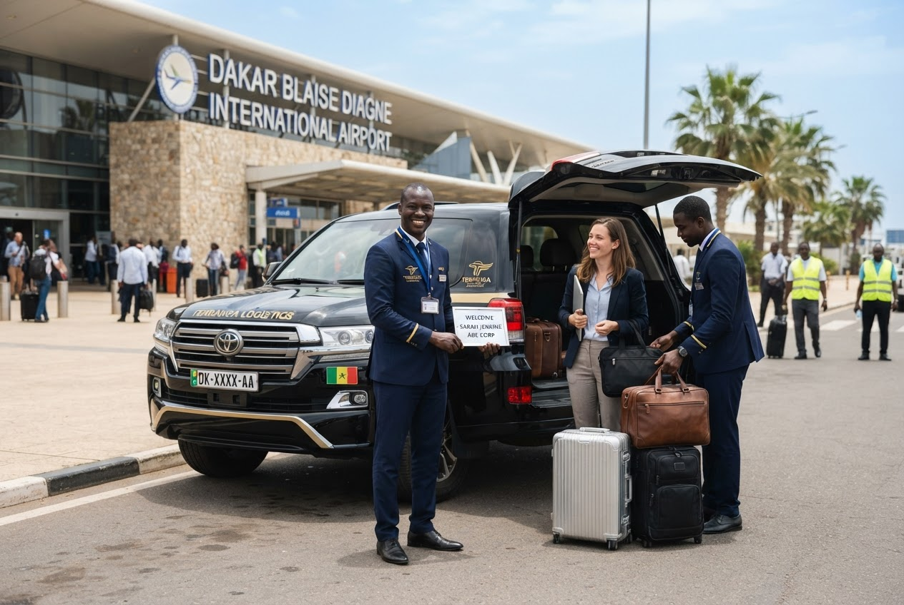
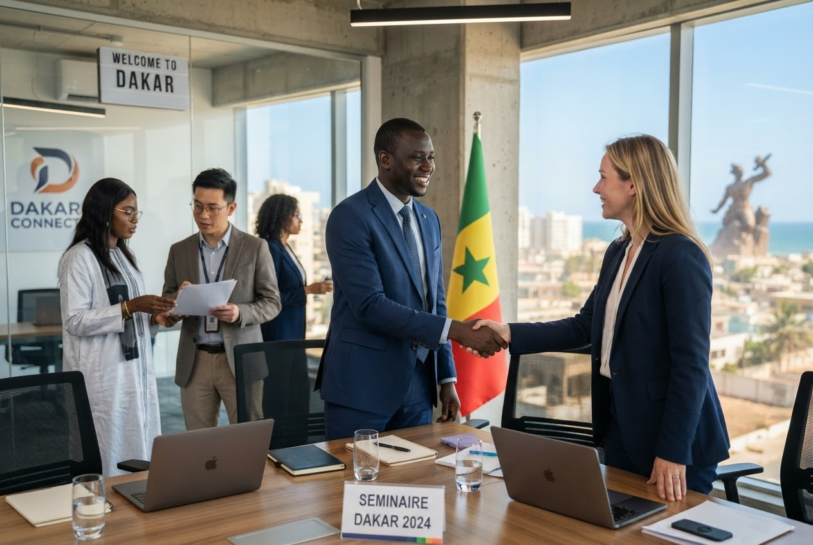

Dakar · Sénégal
Senegalese Consulting & Services accompagne les entreprises, organisations et délégations dans leurs missions à Dakar et partout au Sénégal : interprétation français–anglais–wolof, traduction professionnelle et assistance logistique complète.
« Chaque mot compte. Chaque mission réussit. »
Ce que nous faisons
De l'interprétation et la traduction jusqu'au transport, au logement et à l'accompagnement sur le terrain — un seul interlocuteur pour toute votre mission.
Interprétation consécutive et simultanée pour vos réunions, conférences, négociations et missions officielles. Français, anglais et wolof.
En savoir plus →
Traduction de documents juridiques, techniques et commerciaux, avec justesse et confidentialité.
En savoir plus →

Transport, logement et installation GPS pour vos équipes, à Dakar comme en région.
En savoir plus →

Accompagnement des entreprises étrangères, ONG et délégations : de la préparation jusqu'au terrain.
En savoir plus →
Notre démarche
Par WhatsApp, téléphone ou e-mail, vous nous présentez votre mission : dates, langues, besoins logistiques.
Nous mobilisons l'interprète ou le traducteur adapté et organisons transport, logement et GPS si nécessaire.
Le jour J, vous vous concentrez sur votre mission : nous nous occupons du reste, en français, anglais ou wolof.
Décrivez-nous vos besoins — langues, dates, logistique — et recevez une réponse rapide sur WhatsApp.
Demander un devis WhatsApp